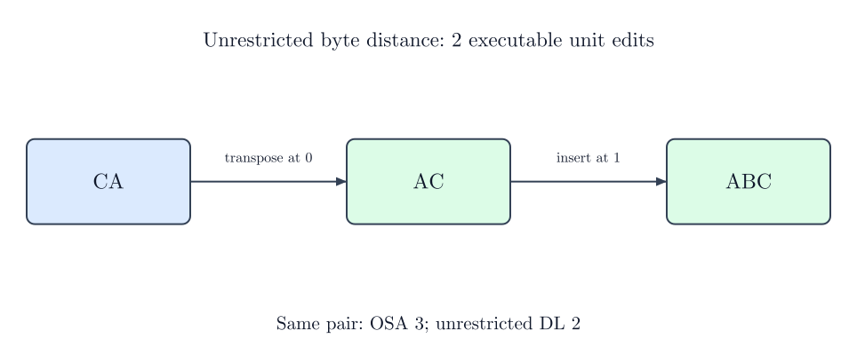
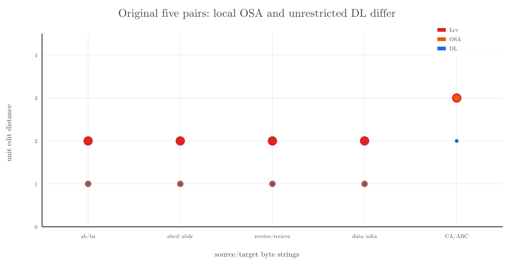
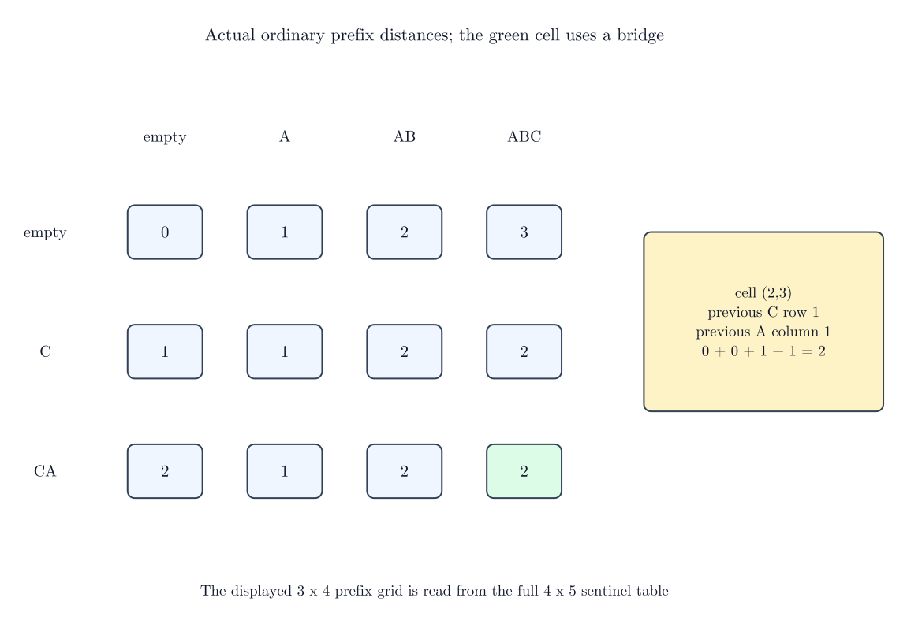
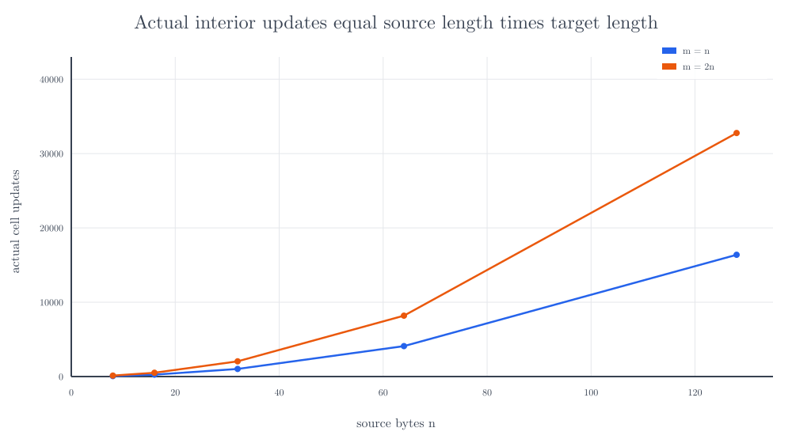

Damerau–Levenshtein: Unrestricted Byte Edits, Actual Tables and Executable Witnesses
Abstract
An adjacent transposition joins insertion, deletion and substitution as a unit-cost byte edit. The unrestricted Damerau–Levenshtein distance minimizes over any sequence of these operations. We begin with CA→AC→ABC: a native shortest script transposes the first two bytes and then inserts B into the already transposed region. The original five string pairs are retained, with actual Levenshtein, restricted optimal-string-alignment (OSA) and unrestricted results. Complete Lowrance–Wagner traces expose prefix values, last occurrences, all four candidates and deterministic choices. Native script expansion and checked replay turn the distance into an executable witness. We derive the recurrence, distinguish OSA's failed triangle inequality from the unrestricted metric, and measure rectangular table work. All semantics are literal bytes, including NUL and UTF-8 encodings, with explicit geometry, candidate arithmetic and complete resource limits.
Two edits that reuse the transposed region
The unrestricted distance from CA to ABC is two: transpose CA into AC, then insert B at current position one. OSA returns three because its local transposition restriction cannot combine these edits in the same region. The program obtains both operations from the actual native traceback and replays them through the core byte-edit API; the intermediate strings and arrow labels are computed from that script.
#include <dm/dm.hpp>
int main() {
std::filesystem::create_directories("build");
const auto t=dm::algorithms::damerau_levenshtein_trace("CA","ABC");
const auto edits=dm::algorithms::damerau_edit_script(t);const auto osa=dm::algorithms::optimal_string_alignment_distance(t.source,t.target);
if(t.distance!=2 || edits.size()!=2 || osa!=3) return 1;
const std::vector<std::string> names{"match","substitute","insert","erase","transpose"};
dm::graphics::Diagram d(80,1100);dm::graphics::DiagramNodeStyle box;box.width=2.3;box.height=1.2;box.font_size=24;box.fill={219,234,254};
std::string state=t.source;d.node("0",{0,0},state,box);
std::print("| edit | operation | current position | expected bytes | replacement bytes | resulting string |\n| ---: | :--- | ---: | :--- | :--- | :--- |\n");
for(std::size_t k=0;k<edits.size();++k) {
const auto& e=edits[k];state=dm::algorithms::apply_byte_edits(state,{e});
std::print("| {} | {} | {} | {} | {} | {} |\n",k+1,names[static_cast<std::size_t>(e.kind)],e.position,e.before.empty()?"empty":e.before,e.after.empty()?"empty":e.after,state);
box.fill={220,252,231};d.node(std::to_string(k+1),{4.5*(k+1),0},state,box)
.edge(std::to_string(k),std::to_string(k+1),std::format("{} at {}",names[static_cast<std::size_t>(e.kind)],e.position));
}
if(state!=t.target) return 1;
d.text({4.5,2},std::format("Unrestricted byte distance: {} executable unit edits",t.distance),23)
.text({4.5,-2},std::format("Same pair: OSA {}; unrestricted DL {}",osa,t.distance),21)
.save_svg("build/damerau_script.svg");
const auto& c=t.cells.back();
std::print("\nReplayed target {}; unrestricted distance {}; OSA {}; previous cross-match positions ({},{}); bridge candidate {}.\n",state,t.distance,osa,c.last_source,c.last_target,c.transposition);
}| edit | operation | current position | expected bytes | replacement bytes | resulting string |
|---|---|---|---|---|---|
| 1 | transpose | 0 | CA | AC | AC |
| 2 | insert | 1 | empty | B | ABC |
Replayed target ABC; unrestricted distance 2; OSA 3; previous cross-match positions (1,1); bridge candidate 2.

Define the distance before choosing a recurrence
Every insertion, deletion, substitution of a different byte and adjacent transposition costs one; matching equal bytes costs zero. The unrestricted distance d_DL(a,b) is the minimum total cost of a script taking a to b. Damerau's historical correction work motivates the four operation classes; Lowrance and Wagner supply the general multiple-edit algorithm used here. No population frequency or claim that transposition is the most common error is needed to define this mathematical model.
The edit graph immediately explains the metric properties. Identity costs zero, and a different string needs at least one positive-cost operation. Every operation has a same-cost inverse, giving symmetry. Concatenating an optimal a→b script with an optimal b→c script is an admissible unrestricted script from a to c, so
Only insertions and deletions change length by one. For the upper bound, substitute the shorter common prefix as needed, then insert/delete the length difference. Every Levenshtein script is also an unrestricted script, proving d_DL≤d_L. Strict improvement means that some script using transposition beats every script without it; it need not be described solely as replacing two substitutions. The CA→ABC witness also includes an insertion. A pair differing only by a swap of two unequal adjacent bytes has DL=1 and Levenshtein=2; swapping equal bytes leaves the string unchanged and costs distance zero.
Retain the original five pairs and compute all three measures
OSA adds only the local crossed-byte prefix move O(i−2,j−2)+1 to the ordinary Levenshtein recurrence, when the two ending bytes cross-match. It forbids reusing an aligned region in the way unrestricted scripts permit. The new native OSA API is a comparison method; the original unrestricted function keeps its name and semantics. All five original pairs are evaluated below, including the case-sensitive CA/ABC distinction.
#include <dm/dm.hpp>
int main() {
std::filesystem::create_directories("build");
const std::vector<std::pair<std::string,std::string>> pairs{{"ab","ba"},{"abcd","abdc"},{"receive","recieve"},{"data","adta"},{"CA","ABC"}};
std::vector<double> indices,lev,osa,dl;std::vector<std::string> labels;
std::print("| original source | original target | Levenshtein | OSA | unrestricted DL |\n| :--- | :--- | ---: | ---: | ---: |\n");
for(std::size_t k=0;k<pairs.size();++k) {
const auto& [a,b]=pairs[k];const auto l=dm::algorithms::levenshtein_distance(a,b),o=dm::algorithms::optimal_string_alignment_distance(a,b),d=dm::algorithms::damerau_levenshtein_distance(a,b);
if(l!=(k<4?2:3) || o!=(k<4?1:3) || d!=(k<4?1:2)) return 1;
std::print("| {} | {} | {} | {} | {} |\n",a,b,l,o,d);indices.push_back(k);lev.push_back(l);osa.push_back(o);dl.push_back(d);labels.push_back(a+"/"+b);
}
auto plot=dm::graphics::RPlot::create();
plot.points(indices,lev,"Lev",{220,38,38},10).points(indices,osa,"OSA",{234,88,12},7).points(indices,dl,"DL",{37,99,235},4)
.legend({"Lev","OSA","DL"},{{220,38,38},{234,88,12},{37,99,235}})
.title("Original five pairs: local OSA and unrestricted DL differ")
.x_ticks(indices,labels).x_label("source/target byte strings").y_label("unit edit distance")
.x_limits(-.5,4.5).y_limits(0,4.5).size(1100,570).save_svg("build/damerau_levenshtein.svg");
std::print("\nAll five original Levenshtein/DL rows retained; OSA is computed rather than assumed.\n");
}| original source | original target | Levenshtein | OSA | unrestricted DL |
|---|---|---|---|---|
| ab | ba | 2 | 1 | 1 |
| abcd | abdc | 2 | 1 | 1 |
| receive | recieve | 2 | 1 | 1 |
| data | adta | 2 | 1 | 1 |
| CA | ABC | 3 | 3 | 2 |
All five original Levenshtein/DL rows retained; OSA is computed rather than assumed.

Derive the last-occurrence bridge and inspect its real table
Let D(i,j) be unrestricted distance between the first i source bytes and the first j target bytes. Boundaries are D(i,0)=i and D(0,j)=j. At positive i,j, let i₁<i be the last source position containing b_j, and j₁<j the earlier target position containing a_i. If both exist, the crossed endpoints can be made adjacent by deleting the intervening source bytes, swapped once, then separated by inserting the intervening target bytes. That gives the candidate
Lowrance and Wagner prove that a minimum-cost script has a suitable canonical trace when 2T≥I+D for transposition, insertion and deletion costs. Unit costs satisfy equality. This justifies considering the last-occurrence bridge beside the three ordinary moves, rather than enumerating arbitrary edit scripts:
A 256-entry last-source-row array supplies i₁. Within each current source row, the last earlier matching target column supplies j₁. Both are captured before the current equality update; the source row is recorded only after the entire row finishes. The implementation's sentinel table H has an extra row and column, with D(i,j)=H(i+1,j+1). Its finite marker U=n+m and clipped candidate arithmetic avoid wrapping size_t sums. For positive i,j, the winning value is at most max(i,j)≤max(n,m)<U, so clipping candidates at U and assigning U to an unavailable bridge cannot change the minimum. Empty cases have only boundary values, including the all-zero empty/empty case.
For CA→ABC, cell (2,3) sees i₁=j₁=1. The bridge starts at D(0,0)=0, deletes zero source bytes, transposes once and inserts the one interior target byte B: 0+0+1+1=2. Each other candidate is three. The following grid reads ordinary prefix values from the actual sentinel table through the checked native accessor. It also computes the OSA triangle counterexample.
#include <dm/dm.hpp>
int main() {
std::filesystem::create_directories("build");
const auto t=dm::algorithms::damerau_levenshtein_trace("CA","ABC");const auto& last=t.cells.back();
if(last.diagonal!=3 || last.insertion!=3 || last.deletion!=3 || last.transposition!=2) return 1;
dm::graphics::Diagram d(76,1150);dm::graphics::DiagramNodeStyle cell;cell.width=1.25;cell.height=.9;cell.font_size=21;
std::print("| source prefix | empty | A | AB | ABC |\n| :--- | ---: | ---: | ---: | ---: |\n");
for(std::size_t i=0;i<=t.source.size();++i) {
std::print("| {}",i?t.source.substr(0,i):"empty");d.text({-2,-2.*i},i?t.source.substr(0,i):"empty",20);
for(std::size_t j=0;j<=t.target.size();++j) {
const auto value=dm::algorithms::damerau_prefix_distance(t,i,j);std::print(" | {}",value);
cell.fill=i==2 && j==3?dm::graphics::RGB{220,252,231}:dm::graphics::RGB{239,246,255};
d.node(std::format("{},{}",i,j),{2.*j,-2.*i},std::to_string(value),cell);
if(!i) d.text({2.*j,1.6},j?t.target.substr(0,j):"empty",20);
}
std::print(" |\n");
}
cell.width=4;cell.height=3;cell.fill={254,243,199};cell.font_size=19;
d.node("bridge",{10,-1.5},std::format("cell (2,3)\nprevious C row {}\nprevious A column {}\n0 + 0 + 1 + 1 = {}",last.last_source,last.last_target,last.transposition),cell)
.text({4.5,3.3},"Actual ordinary prefix distances; the green cell uses a bridge",22)
.text({4.5,-6},"The displayed 3 x 4 prefix grid is read from the full 4 x 5 sentinel table",19)
.save_svg("build/damerau_prefix.svg");
const auto x=dm::algorithms::optimal_string_alignment_distance("CA","AC"),y=dm::algorithms::optimal_string_alignment_distance("AC","ABC"),z=dm::algorithms::optimal_string_alignment_distance("CA","ABC");
const auto direct=dm::algorithms::damerau_levenshtein_distance("CA","ABC");if(z<=x+y || direct>x+y) return 1;
std::print("\nOSA triangle: CA->ABC {}, but CA->AC {} plus AC->ABC {} gives {}. Unrestricted direct distance {}.\n",z,x,y,x+y,direct);
std::print("Last-cell candidates: diagonal {}, insert {}, erase {}, bridge {}; selected value {}.\n",last.diagonal,last.insertion,last.deletion,last.transposition,last.value);
}| source prefix | empty | A | AB | ABC |
|---|---|---|---|---|
| empty | 0 | 1 | 2 | 3 |
| C | 1 | 1 | 2 | 2 |
| CA | 2 | 1 | 2 | 2 |
OSA triangle: CA->ABC 3, but CA->AC 1 plus AC->ABC 1 gives 2. Unrestricted direct distance 2. Last-cell candidates: diagonal 3, insert 3, erase 3, bridge 2; selected value 2.

The traceback uses first minima in diagonal, insertion, deletion, bridge order. It is deterministic, but need not enumerate every optimal script. For a selected bridge, native script expansion deletes the source interior at the evolving position, swaps its adjacent endpoints and inserts the target interior. Processing prefix blocks left to right maintains a completed target prefix followed by the unconsumed source suffix. This invariant explains why current-state positions remain valid even when preceding edits change length. Matches produce no instruction; the number of emitted unit edits equals the native unrestricted distance. Local shape, crossed-byte and recurrence checks protect recovery from malformed public records, without claiming that arbitrary edited tables are still globally optimal.
Measure rectangular work and account for the borders
For source length n and target length m, the recurrence evaluates exactly nm interior cells and one byte-equality test per cell. Table initialization and borders still cost work when either string is empty. This full-table kernel uses (n+2)(m+2) size_t entries plus 256 last-source-row entries. The trace adds one compact candidate record per interior cell; it stores no evolving-string snapshots. Time and space are O((n+1)(m+1)+256), including empty cases. OSA instead needs three rolling rows of length min(n,m)+1 for its local recurrence; that space advantage does not give it the unrestricted metric's semantics.
The next square and rectangular controls use all-a sources and all-b targets. Every cell is evaluated, even though no equal-byte or eligible bridge event occurs. Doubling only the target length doubles the interior work. The table and edit caps below reject complete requests rather than truncating evidence.
#include <dm/dm.hpp>
int main() {
std::filesystem::create_directories("build");
auto plot=dm::graphics::RPlot::create();const std::vector<dm::graphics::RGB> colours{{37,99,235},{234,88,12}};
std::print("| source bytes | target bytes | complete table cells | actual interior updates | byte matches | eligible bridges | distance |\n| ---: | ---: | ---: | ---: | ---: | ---: | ---: |\n");
for(int factor:{1,2}) {
std::vector<double> lengths,work;
for(std::size_t n:{8,16,32,64,128}) {
const std::size_t m=factor*n;const auto t=dm::algorithms::damerau_levenshtein_trace(std::string(n,'a'),std::string(m,'b'));
if(t.work.cells_evaluated!=n*m || t.work.byte_comparisons!=n*m || t.work.byte_matches || t.work.eligible_transpositions || t.distance!=m) return 1;
std::print("| {} | {} | {} | {} | {} | {} | {} |\n",n,m,t.table.size(),t.work.cells_evaluated,t.work.byte_matches,t.work.eligible_transpositions,t.distance);
lengths.push_back(n);work.push_back(t.work.cells_evaluated);
}
plot.line(lengths,work,factor==1?"m = n":"m = 2n",colours[factor-1],2.5).points(lengths,work,"",colours[factor-1],4);
}
plot.legend({"m = n","m = 2n"},colours).title("Actual interior updates equal source length times target length")
.x_label("source bytes n").y_label("actual cell updates").x_limits(0,135).y_limits(0,43000).size(1000,560)
.save_svg("build/damerau_work.svg");
const auto t=dm::algorithms::damerau_levenshtein_trace("CA","ABC");int rejected=0;
try {dm::algorithms::damerau_levenshtein_trace("CA","ABC",19);} catch(const std::length_error&) {++rejected;}
try {dm::algorithms::damerau_edit_script(t,1);} catch(const std::length_error&) {++rejected;}
try {dm::algorithms::damerau_levenshtein_trace("",std::string(100,'a'),203);} catch(const std::length_error&) {++rejected;}
try {dm::algorithms::apply_byte_edits("CA",{{dm::algorithms::DamerauMove::erase,0,"X",""}});} catch(const std::invalid_argument&) {++rejected;}
if(rejected!=4) return 1;
const auto empty=dm::algorithms::damerau_levenshtein_trace("",std::string(100,'a'),0);
const auto binary=dm::algorithms::damerau_levenshtein_trace(std::string("\0A",2),std::string("A\0",2));const auto edits=dm::algorithms::damerau_edit_script(binary,0);
const bool replayed=dm::algorithms::apply_byte_edits(binary.source,edits)==binary.target;
if(binary.distance!=1 || !replayed) return 1;
std::print("\nCell cap, edit cap, empty-border cap and expected-byte mismatch: {} expected rejections. Empty/100-byte case has {} table cells and {} interior updates.\n",rejected,empty.table.size(),empty.work.cells_evaluated);
std::print("NUL-containing adjacent swap: distance {}, replay matches target {}. UTF-8 encoded e-acute to ASCII e: byte distance {}.\n",binary.distance,replayed,dm::algorithms::damerau_levenshtein_distance(std::string("\xc3\xa9",2),"e"));
}| source bytes | target bytes | complete table cells | actual interior updates | byte matches | eligible bridges | distance |
|---|---|---|---|---|---|---|
| 8 | 8 | 100 | 64 | 0 | 0 | 8 |
| 16 | 16 | 324 | 256 | 0 | 0 | 16 |
| 32 | 32 | 1156 | 1024 | 0 | 0 | 32 |
| 64 | 64 | 4356 | 4096 | 0 | 0 | 64 |
| 128 | 128 | 16900 | 16384 | 0 | 0 | 128 |
| 8 | 16 | 180 | 128 | 0 | 0 | 16 |
| 16 | 32 | 612 | 512 | 0 | 0 | 32 |
| 32 | 64 | 2244 | 2048 | 0 | 0 | 64 |
| 64 | 128 | 8580 | 8192 | 0 | 0 | 128 |
| 128 | 256 | 33540 | 32768 | 0 | 0 | 256 |
Cell cap, edit cap, empty-border cap and expected-byte mismatch: 4 expected rejections. Empty/100-byte case has 204 table cells and 0 interior updates. NUL-containing adjacent swap: distance 1, replay matches target true. UTF-8 encoded e-acute to ASCII e: byte distance 2.

The trace's default complete cell cap is 1,000,000, including the marker and prefix borders; it is checked before input copying, table/record allocation or computation. Script output has a separate 100,000-instruction cap, checked after basic shape/distance validation and before traceback/output allocation. Zero disables the corresponding optional cap; checked geometry and container limits remain. Candidate sums clip safely at the checked n+m bound. Counter overflow rejects rather than wrapping, and no trace/script silently truncates. The legacy scalar signature and string_metrics include remain available, without an optional allocation cap. Other string metrics are unchanged.
Byte positions are literal std::string offsets. Embedded NULs and every byte value are valid, with no UTF-8 decoding, case folding, normalization or grapheme segmentation. The encoded accented character in the final control occupies two bytes and therefore has byte distance two to ASCII e. This is the declared alphabet, rather than a Unicode character-distance computation. Replay validates each operation's current position, exact expected bytes and payload shape on a private by-value string; failures leave an lvalue caller unchanged. Generic std::string replacements can cost O(kL+n) for k edits and maximum evolving length L, so script replay is a separate cost from computing the distance or expanding its O(n+m+distance) traceback.
The permanent independent oracle performs breadth-first shortest-path search using literal insert/delete/substitute/adjacent-swap neighbours, without any prefix-DP recurrence. All 121 ternary strings through length four give 14,641 pairs. Every target distance is at most four, so a search limited to four edits and intermediate length source_length+4 is complete; projecting all outside bytes to a fixed ternary byte never increases cost, so outside- alphabet intermediates offer no shorter route. Native distances, literal script replay and three-row OSA versus a full-table OSA control agree. The finite corpus also satisfies all 1,771,561 DL triangle checks, while the explicit OSA triple fails. One thousand seeded repeated/full- byte pairs, all 256 byte swap cases, signed-char/NUL/UTF-8 controls, actual last-occurrence/candidate bookkeeping, rectangular/border counts, exact caps, owned results and malformed local witnesses/instructions are covered. The nine new cases pass AddressSanitizer and UBSan. These algorithmic controls need no unrelated downloaded dataset.
References and reproducibility
- F. J. Damerau (1964), “A Technique for Computer Detection and Correction of Spelling Errors,” Communications of the ACM 7(3), pp. 171–176: https://doi.org/10.1145/363958.363994 . Its historical single-error correction model motivates the operation classes rather than the unrestricted DP.
- R. Lowrance and R. A. Wagner (1975), “An Extension of the String-to-String Correction Problem,” Journal of the ACM 22(2), pp. 177–183: https://doi.org/10.1145/321879.321880 . This report uses unit costs and the full last-occurrence recurrence, with explicit checked clipping and capture.
Every block is a complete editable C++23 program using dm/dm.hpp. The core supplies distance algorithms, the actual table/candidates, script expansion and checked edit replay. Native figures are saved locally to build/ and copied into figures/. Results contain tables and image references, not SVG XML, data URIs or base64 payloads.